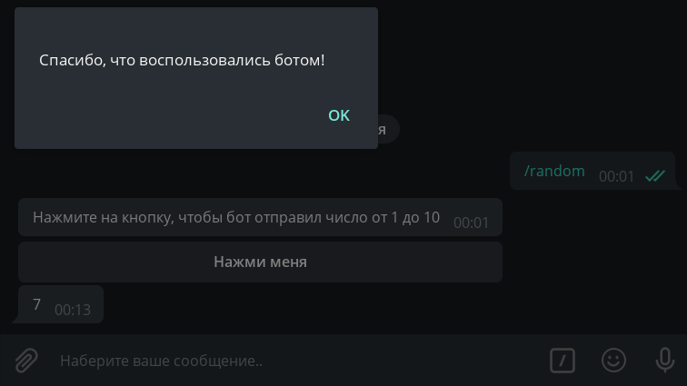

Кнопки¶
Старая версия aiogram
Для aiogram 3.x эта глава расположена здесь.
В этой главе мы познакомимся с такой замечательной фичей Telegram-ботов как кнопки. Прежде всего, чтобы избежать путаницы, определимся с названиями. То, что цепляется к низу экрана вашего устройства, будем называть обычными кнопками, а то, что цепляется непосредственно к сообщениям, назовём инлайн-кнопками. Ещё раз картинкой:

Обычные кнопки¶
Кнопки как шаблоны¶
Этот вид кнопок появился вместе с Bot API в далёком 2015 году и представляет собой не что иное, как шаблоны сообщений (за исключением нескольких особых случаев, но о них позже). Принцип простой: что написано на кнопке, то и будет отправлено в текущий чат. Соответственно, чтобы обработать нажатие такой кнопки, бот должен распознавать входящие текстовые сообщения.
Напишем хэндлер, который будет при нажатии на команду /start отправлять сообщение с двумя кнопками:
# from aiogram import types
@dp.message_handler(commands="start")
async def cmd_start(message: types.Message):
keyboard = types.ReplyKeyboardMarkup()
button_1 = types.KeyboardButton(text="С пюрешкой")
keyboard.add(button_1)
button_2 = "Без пюрешки"
keyboard.add(button_2)
await message.answer("Как подавать котлеты?", reply_markup=keyboard)
Обратите внимание, что т.к. обычные кнопки суть шаблоны сообщений, то их можно создавать не только как объекты KeyboardButton,
но и как обычные строки.
Что ж, запустим бота и обалдеем от громадных кнопок:

Как-то некрасиво. Во-первых, хочется сделать кнопки поменьше, а во-вторых, расположить их горизонтально.
Почему вообще они такие большие? Дело в том, что по умолчанию «кнопочная» клавиатура должна занимать на смартфонах столько
же места, сколько и обычная буквенная. Для уменьшения кнопок к объекту клавиатуры надо указать дополнительный
параметр resize_keyboard=True.
Но как заменить вертикальные кнопки на горизонтальные? С точки зрения Bot API, клавиатура — это массив массивов
кнопок, а если говорить проще, массив строк. Метод add() при каждом вызове создаёт новую строку (ряд) и принимает
произвольное число аргументов по количеству желаемых кнопок в строке. Перепишем наш код, чтобы было красиво:
@dp.message_handler(commands="start")
async def cmd_start(message: types.Message):
keyboard = types.ReplyKeyboardMarkup(resize_keyboard=True)
buttons = ["С пюрешкой", "Без пюрешки"]
keyboard.add(*buttons)
await message.answer("Как подавать котлеты?", reply_markup=keyboard)
Обратите внимание на конструкцию *buttons. Здесь вам не C++ и звёздочка используется для распаковки списка.
Подробнее об операторах * и ** можно прочитать
здесь.
Смотрим — действительно красиво:

Осталось научить бота реагировать на нажатие таких кнопок. Как уже было сказано выше, необходимо делать проверку
на полное совпадение текста. Сделаем это двумя способами: через специальный фильтр Text и обычной лямбдой:
# from aiogram.dispatcher.filters import Text
@dp.message_handler(Text(equals="С пюрешкой"))
async def with_puree(message: types.Message):
await message.reply("Отличный выбор!")
@dp.message_handler(lambda message: message.text == "Без пюрешки")
async def without_puree(message: types.Message):
await message.reply("Так невкусно!")

Чтобы удалить кнопки, необходимо отправить новое сообщение со специальной «удаляющей» клавиатурой типа
ReplyKeyboardRemove. Например: await message.reply("Отличный выбор!", reply_markup=types.ReplyKeyboardRemove())
У объекта обычной клавиатуры есть ещё две полезных опции:
one_time_keyboard для скрытия кнопок после нажатия и selective для показа клавиатуры лишь некоторым участникам группы.
Их использование остаётся для самостоятельного изучения.
Помимо стандартных опций, описанных выше, aiogram немного расширяет функциональность клавиатур параметром row_width.
При его использовании, фреймворк автоматически разобьёт массив кнопок на строки по N элементов в каждой, где N —
значение row_width, например, row_width=2. Попробуйте!
Специальные обычные кнопки¶
По состоянию на конец ужасного 2020 года в Telegram существует три специальных вида обычных кнопок, не являющихся шаблонами:
для отправки текущей геолокации, для отправки своего номера телефона и ярлык для создания опроса/викторины. Для первых двух
типов достаточно установить булевый флаг, а для опросов и викторин нужно передать специальный тип KeyboardButtonPollType
и, по желанию, указать тип создаваемого объекта.
Впрочем, проще один раз увидеть код:
@dp.message_handler(commands="special_buttons")
async def cmd_special_buttons(message: types.Message):
keyboard = types.ReplyKeyboardMarkup(resize_keyboard=True)
keyboard.add(types.KeyboardButton(text="Запросить геолокацию", request_location=True))
keyboard.add(types.KeyboardButton(text="Запросить контакт", request_contact=True))
keyboard.add(types.KeyboardButton(text="Создать викторину",
request_poll=types.KeyboardButtonPollType(type=types.PollType.QUIZ)))
await message.answer("Выберите действие:", reply_markup=keyboard)
Инлайн-кнопки¶
URL-кнопки и колбэки¶
В отличие от обычных кнопок, инлайновые цепляются не к низу экрана, а к сообщению, с которым были отправлены. В этой главе мы рассмотрим два типа таких кнопок: URL и Callback. Ещё один — Switch — будет рассмотрен в главе про инлайн-режим.
Login- и Pay-кнопки в книге рассматриваться не будут вообще. Если у кого-то есть желание помочь хотя бы с рабочим кодом для авторизации или оплаты, пожалуйста, создайте Pull Request на GitHub. Спасибо!
Самые простые инлайн-кнопки относятся к типу URL, т.е. «ссылка». Поддерживаются только протоколы HTTP(S) и tg://
@dp.message_handler(commands="inline_url")
async def cmd_inline_url(message: types.Message):
buttons = [
types.InlineKeyboardButton(text="GitHub", url="https://github.com"),
types.InlineKeyboardButton(text="Оф. канал Telegram", url="tg://resolve?domain=telegram")
]
keyboard = types.InlineKeyboardMarkup(row_width=1)
keyboard.add(*buttons)
await message.answer("Кнопки-ссылки", reply_markup=keyboard)
А если хотите обе кнопки в ряд, то уберите row_width=1 (тогда будет использоваться значение по умолчанию 3).
С URL-кнопками больше обсуждать, по сути, нечего, поэтому перейдём к гвоздю сегодняшней программы — Callback-кнопкам. Это очень мощная штука, которую вы можете встретить практически везде. Кнопки-реакции у постов (лайки), меню у @BotFather и т.д. Суть в чём: у колбэк-кнопок есть специальное значение (data), по которому ваше приложение опознаёт, что нажато и что надо сделать. И выбор правильного data очень важен! Стоит также отметить, что, в отличие от обычных кнопок, нажатие на колбэк-кнопку позволяет сделать практически что угодно, от заказа пиццы до перезагрузки сервера.
Напишем хэндлер, который по команде /random будет отправлять сообщение с колбэк-кнопкой:
@dp.message_handler(commands="random")
async def cmd_random(message: types.Message):
keyboard = types.InlineKeyboardMarkup()
keyboard.add(types.InlineKeyboardButton(text="Нажми меня", callback_data="random_value"))
await message.answer("Нажмите на кнопку, чтобы бот отправил число от 1 до 10", reply_markup=keyboard)
Но как же обработать нажатие? Если раньше мы использовали message_handler для обработки входящих сообщений, то теперь
будем использовать callback_query_handler для обработки колбэков. Ориентироваться будем на «значение» кнопки, т.е. на
её data:
@dp.callback_query_handler(text="random_value")
async def send_random_value(call: types.CallbackQuery):
await call.message.answer(str(randint(1, 10)))
Важно
Несмотря на то, что параметр кнопки callback_data, а значение data лежит в одноимённом поле data
объекта CallbackQuery, собственный фильтр aiogram называется text.

Ой, а что это за часики? Оказывается, сервер Telegram ждёт от нас подтверждения о доставке колбэка, иначе в течение 30
секунд будет показывать специальную иконку. Чтобы скрыть часики, нужно вызвать метод answer() у колбэка (или использовать
метод API answer_callback_query()). В общем случае, в метод answer() можно ничего не передавать, но можно вызвать
специальное окошко (всплывающее сверху или поверх экрана):
@dp.callback_query_handler(text="random_value")
async def send_random_value(call: types.CallbackQuery):
await call.message.answer(str(randint(1, 10)))
await call.answer(text="Спасибо, что воспользовались ботом!", show_alert=True)
# или просто await call.answer()

Обратите внимание
В функции send_random_value мы вызывали метод answer() не у message, а у call.message. Это связано с тем,
что колбэк-хэндлеры работают не с сообщениями (тип Message),
а с колбэками (тип CallbackQuery), у которого другие поля, и
само сообщение — всего лишь его часть. Учтите также, что message — это сообщение, к которому была прицеплена
кнопка (т.е. отправитель такого сообщения — сам бот). Если хотите узнать, кто нажал на кнопку, смотрите
поле from (в вашем коде это будет call.from_user, т.к. слово from зарезервировано в Python)
Когда вызывать answer()?
В общем случае, главное — просто не забыть сообщить Telegram о получении колбэк-запроса, но я рекомендую ставить
вызов answer() в самом конце, и вот почему: если вдруг в процессе обработки колбэка случится какая-то ошибка и
бот нарвётся на необработанное исключение, пользователь увидит неубирающиеся полминуты часики и поймёт, что что-то
не так. В противном случае, часики исчезнут, а пользователь останется в неведении, выполнился его запрос успешно или нет.
Перейдём к примеру посложнее. Пусть пользователю предлагается сообщение с числом 0, а внизу три кнопки: +1, -1 и Подтвердить. Первыми двумя он может редактировать число, а последняя удаляет всю клавиатуру, фиксируя изменения. Хранить значения будем в памяти в словаре (про конечные автоматы поговорим как-нибудь в другой раз).
# Здесь хранятся пользовательские данные.
# Т.к. это словарь в памяти, то при перезапуске он очистится
user_data = {}
def get_keyboard():
# Генерация клавиатуры.
buttons = [
types.InlineKeyboardButton(text="-1", callback_data="num_decr"),
types.InlineKeyboardButton(text="+1", callback_data="num_incr"),
types.InlineKeyboardButton(text="Подтвердить", callback_data="num_finish")
]
# Благодаря row_width=2, в первом ряду будет две кнопки, а оставшаяся одна
# уйдёт на следующую строку
keyboard = types.InlineKeyboardMarkup(row_width=2)
keyboard.add(*buttons)
return keyboard
async def update_num_text(message: types.Message, new_value: int):
# Общая функция для обновления текста с отправкой той же клавиатуры
await message.edit_text(f"Укажите число: {new_value}", reply_markup=get_keyboard())
@dp.message_handler(commands="numbers")
async def cmd_numbers(message: types.Message):
user_data[message.from_user.id] = 0
await message.answer("Укажите число: 0", reply_markup=get_keyboard())
@dp.callback_query_handler(Text(startswith="num_"))
async def callbacks_num(call: types.CallbackQuery):
# Получаем текущее значение для пользователя, либо считаем его равным 0
user_value = user_data.get(call.from_user.id, 0)
# Парсим строку и извлекаем действие, например `num_incr` -> `incr`
action = call.data.split("_")[1]
if action == "incr":
user_data[call.from_user.id] = user_value+1
await update_num_text(call.message, user_value+1)
elif action == "decr":
user_data[call.from_user.id] = user_value-1
await update_num_text(call.message, user_value-1)
elif action == "finish":
# Если бы мы не меняли сообщение, то можно было бы просто удалить клавиатуру
# вызовом await call.message.delete_reply_markup().
# Но т.к. мы редактируем сообщение и не отправляем новую клавиатуру,
# то она будет удалена и так.
await call.message.edit_text(f"Итого: {user_value}")
# Не забываем отчитаться о получении колбэка
await call.answer()
И, казалось бы, всё работает:

Но теперь представим, что ушлый пользователь сделал следующее: вызвал команду /numbers (значение 0), увеличил значение
до 1, снова вызвал /numbers (значение сбросилось до 0) и отредактировал нажал кнопку "+1" на первом сообщении.
Что произойдёт? Бот по-честному отправит запрос на редактирование текста со значением 1, но т.к. на том сообщении
уже стоит цифра 1, то Bot API вернёт ошибку, что старый и новый тексты совпадают, а бот словит исключение:
aiogram.utils.exceptions.MessageNotModified: Message is not modified: specified new message content and reply markup
are exactly the same as a current content and reply markup of the message

С этой ошибкой вы, скорее всего, будете поначалу часто сталкиваться, пытаясь редактировать сообщения. Но, в действительности,
решается проблема очень просто: мы проигнорируем исключение MessageNotModified. Из первой главы вы
уже знаете о такой прекрасной штуке, как errors_handler, но в этот раз мы поступим чуть иначе и перепишем
функцию update_num_text() следующим образом:
# from aiogram.utils.exceptions import MessageNotModified
# from contextlib import suppress
async def update_num_text(message: types.Message, new_value: int):
with suppress(MessageNotModified):
await message.edit_text(f"Укажите число: {new_value}", reply_markup=get_keyboard())
Если теперь вы попробуете повторить пример выше, то указанное исключение в этом блоке кода бот просто-напросто проигнорирует.
Фабрика колбэков¶
В aiogram существует т.н. фабрика колбэков. Вы создаёте объект CallbackData, указываете ему префикс и произвольное
количество доп. аргументов, которые в дальнейшем указываете при создании колбэка для кнопки.
Например, рассмотрим следующий объект:
# from aiogram.utils.callback_data import CallbackData
cb= CallbackData("post", "id", "action")
button = types.InlineKeyboardButton(
text="Лайкнуть",
callback_data=cb.new(id=5, action="like")
)
В примере выше в кнопку запишется callback_data, равный post:5:like, а хэндлер на префикс post будет выглядеть так:
@dp.callback_query_handler(cb.filter())
async def callbacks(call: types.CallbackQuery, callback_data: dict):
post_id = callback_data["id"]
action = callback_data["action"]
В предыдущем примере с числами мы грамотно выбрали callback_data, поэтому смогли легко запихнуть все обработчики
в один хэндлер. Но можно логически разнести обработку инкремента и декремента от обработки нажатия на кнопку "Подтвердить".
Для этого в фильтре фабрики можно указать желаемые значения какого-либо параметра. Давайте перепишем наш пример
с использоваанием фабрики:
# fabnum - префикс, action - название аргумента, которым будем передавать значение
callback_numbers = CallbackData("fabnum", "action")
def get_keyboard_fab():
buttons = [
types.InlineKeyboardButton(text="-1", callback_data=callback_numbers.new(action="decr")),
types.InlineKeyboardButton(text="+1", callback_data=callback_numbers.new(action="incr")),
types.InlineKeyboardButton(text="Подтвердить", callback_data=callback_numbers.new(action="finish"))
]
keyboard = types.InlineKeyboardMarkup(row_width=2)
keyboard.add(*buttons)
return keyboard
async def update_num_text_fab(message: types.Message, new_value: int):
with suppress(MessageNotModified):
await message.edit_text(f"Укажите число: {new_value}", reply_markup=get_keyboard_fab())
@dp.message_handler(commands="numbers_fab")
async def cmd_numbers(message: types.Message):
user_data[message.from_user.id] = 0
await message.answer("Укажите число: 0", reply_markup=get_keyboard_fab())
@dp.callback_query_handler(callback_numbers.filter(action=["incr", "decr"]))
async def callbacks_num_change_fab(call: types.CallbackQuery, callback_data: dict):
user_value = user_data.get(call.from_user.id, 0)
action = callback_data["action"]
if action == "incr":
user_data[call.from_user.id] = user_value + 1
await update_num_text_fab(call.message, user_value + 1)
elif action == "decr":
user_data[call.from_user.id] = user_value - 1
await update_num_text_fab(call.message, user_value - 1)
await call.answer()
@dp.callback_query_handler(callback_numbers.filter(action=["finish"]))
async def callbacks_num_finish_fab(call: types.CallbackQuery):
user_value = user_data.get(call.from_user.id, 0)
await call.message.edit_text(f"Итого: {user_value}")
await call.answer()
На этом глава про кнопки окончена, но про некоторые других их виды мы поговорим в следующих главах.